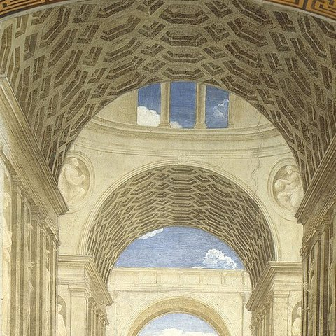

Vaults and sky

Start at the top, where the plaster is highest, so that drips and splashes fall on wall you have not painted yet. The coffered barrel vaults and the patches of sky come first.
The cartoon has no architecture at all, only perspective lines and a plan sketch, so a separate architectural cartoon was probably used. It is lost.